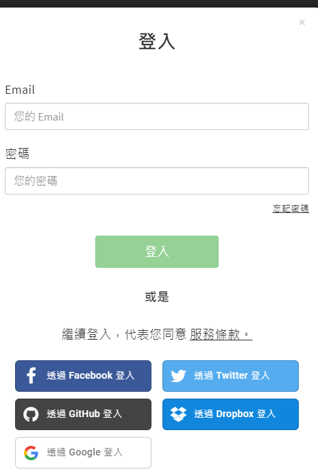

[Angular] Firebase 該如何連結多登入方式到同一個驗證帳號上
AngularFire 讓我們在處理 firebase 相關功能時，變得十分簡單，可以說是無痛結合。周末有朋友提出一個問題，當我們利用 Firebase 當作系統的登入驗證功能時，由於 Firebase本身有提供多種登入驗證的方式，我們該如何讓使用者可以用不同的登入方式登入，但我們仍將其視為同一使用者呢?
其實 firebase 有提供一種帳號連結模式，讓我們可以連結多種登入方式到同一個帳號上，讓該使用者即使用不同的方式登入系統，能可取得相同的 uid. 這篇文章將會筆記如何完成這一動作
範例
當使用者第一次使用第三方驗證登入時，Firebase 就會先 assign 一個 uid 給該使用者使用，但有些情境是類似這樣

網站也允許使用者使用帳號密碼登入，這裡我們就來實做這一個功能，讓 Google 登入的帳號，也可以綁訂一個 email 帳號做後續的登入
連結
-
先用 Google 登入的方式取得第一個 UID
1
2
3
4
5
6
7
8import { auth } from 'firebase/app';
export class AppComponent implements OnInit {
constructor(private afAuth: AngularFireAuth) {}
googleLogin() {
this.afAuth.auth.signInWithPopup(new auth.GoogleAuthProvider());
}
} -
AngularFireAuth的authState可以用來取得已登入 Firebase 的 User 物件資訊1
2
3
4
5
6
7
8import { User} from 'firebase/app';
...
user: User;
this.afAuth.authState.subscribe(user => {
console.log(user);
this.isLogin = user !== null && !user.isAnonymous;
this.user = user;
}); -
刻一個表單用來取得使用者的 email 與 password 資訊
1
2
3
4account = new FormGroup({
email: new FormControl(),
password: new FormControl()
});1
2
3
4
5<form [formGroup]="account">
Email: <input type="text" formControlName="email">
password: <input type="password" formControlName="password">
<button (click)="linkWithEmail()">Link With Email</button>
</form> -
綁定 email 資訊到登入的使用者身上
1
2
3
4
5
6
7
8
9
10linkWithEmail() {
const { email, password } = this.account.value;
const credential = auth.EmailAuthProvider.credential(email, password);
this.user
.linkWithCredential(credential)
.then(success => {
console.log(success);
})
.catch(error => console.log(error));
}- 連結成功後並不會觸發
afAuth狀態 - 連結成功後會重新回傳一個 User 物件，建議更新原本的 user 變數值.
- 連結成功後並不會觸發
-
如果要綁定其它第三方認證的方式
1
2
3linkWithFB() {
this.user.linkWithPopup(new auth.FacebookAuthProvider());
}
連結狀態
我們又該如何得知此帳號到底有連結那些 provider，在 user 物件資訊內，可以從 providerData (陣列)取得更多資訊，所以可以透過該陣列內取得其它的連結服務 (可利用 providerId )
1 | this.userProviders = user.providerData.map(userInfo => userInfo.providerId); |
取消連結
既然能連結，就能取消連結，取消連結的方式如下，其它 provider 也比照辦理
1 | this.user.unlink(auth.EmailAuthProvider.PROVIDER_ID) |
總結
透過以上的方式就可以做到多驗證服務商的帳號連結動作，而在連結失敗時 Firebase 回傳的錯誤訊息也很清晰明瞭。後續的變化就交給各位發揮了
雖然這篇文章是用 TypeScript 做範例，其它的語言的操作模式也相同，轉換上應該沒有太大的問題才是